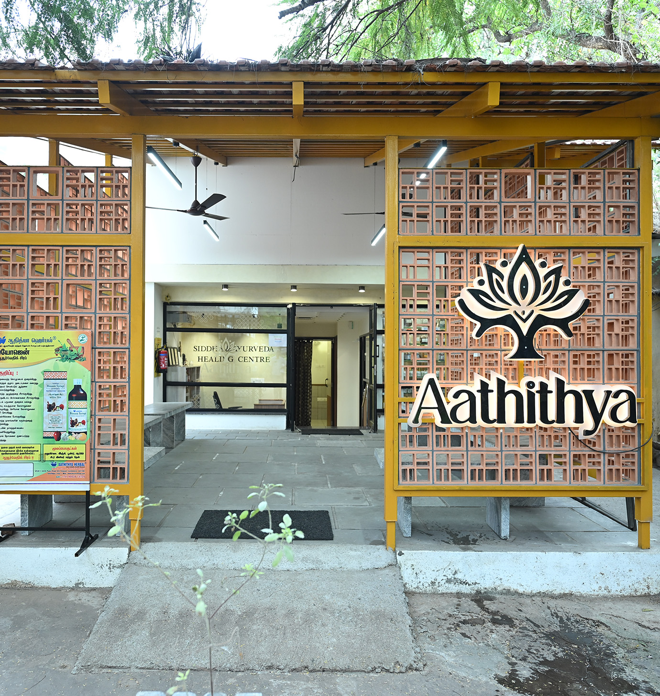

Holistic Siddha, Ayurveda & Homoeopathy Healing Center in Coimbatore
Where Tradition Heals, and Wellness Begins

Awaken the Body. Align the Spirit. Heal Naturally.
Through authentic Siddha and Ayurveda consultations, Aathitya Wellness Farm helps restore balance and vitality from within. Explore holistic treatments that honor ancient wisdom while addressing modern health concerns.
About Aathithya Wellness Centre
Aathithya Wellness Farm is a holistic Siddha and Ayurvedic wellness centre dedicated to restoring health through the timeless wisdom of Indian traditional medicine. Rooted in authenticity and guided by compassion, Aathithya offers a serene healing environment where the body, mind, heart, and soul are nurtured in harmony.
Our approach goes beyond symptom management. We focus on understanding the individual as a whole—identifying the root cause of imbalance, preventing disease, and empowering patients to achieve sustainable, long-term well-being through natural and responsible healing practices.
Aathithya is a comprehensive wellness centre designed to promote holistic health through traditional therapies, personalized consultations, and guided wellness programs. Our calm and healing space supports natural recovery and mindful living. We believe that true health is achieved when individuals understand their body, adopt balanced routines, and live in alignment with nature.
Rooted in Tradition. Designed for Total Healing.
Step into a space where ancient healing sciences meet compassionate care.
Our experienced doctors offer customized treatments to rejuvenate your body, mind, and spirit.
Photo Bio Modulation Therapy
A gentle, non-invasive treatment using , healing light to support the body’s natural repair process. It reduces pain and inflammation, improves circulation, and promotes faster healing. Enhances overall well-being and complements Siddha and Ayurvedic treatments.
In-House Herbal Medicines & Health Products
Most Siddha and Ayurveda medicines and wellness products are carefully manufactured at Aathitya Herbal, ensuring authenticity, quality, and traditional integrity.
Free Eye Camp – Kalikkam (Siddha Method)
A traditional Siddha eye-care practice offered through free camps, supporting eye health using time-tested natural methods.
Swarnapashnam Camp for Children (Ages 1–16)
A monthly Siddha wellness camp conducted on Poosa Nathchitram, aimed at supporting immunity, growth, and overall well-being in children.
Foot Reflexology Therapy
Expert-led foot reflexology sessions designed to stimulate natural healing, improve circulation, and promote deep relaxation.
Spiritual Counselling & Healing
Free spiritual counselling and healing support for karmic imbalances, emotional challenges, mental stress, trauma, and physical discomfort—guided with compassion and traditional wisdom.
Organic Traditional Indian Food Products
Naturally prepared organic food products based on Indian traditional knowledge, created to promote daily health, vitality, and holistic wellness.


The most popular questions to discuss Wellness
Aathithya Wellness Farm is a holistic healing centre based on Siddha and Ayurvedic medicine, offering consultations, therapies, traditional medicines, and organic wellness foods.
We focus on root-cause correction, combining medicine, nutrition, lifestyle guidance, and spiritual awareness for long-term wellness.
Personalised consultations, Siddha & Ayurvedic therapies, Kalikkam, Swarnapashnam, foot reflexology, Photo Bio Modulation Therapy, spiritual counselling, and wellness camps.
Yes. In-house manufacturing ensures authenticity, purity, and quality control.
Yes. Spiritual understanding is gently integrated to support emotional and mental well-being alongside physical health.